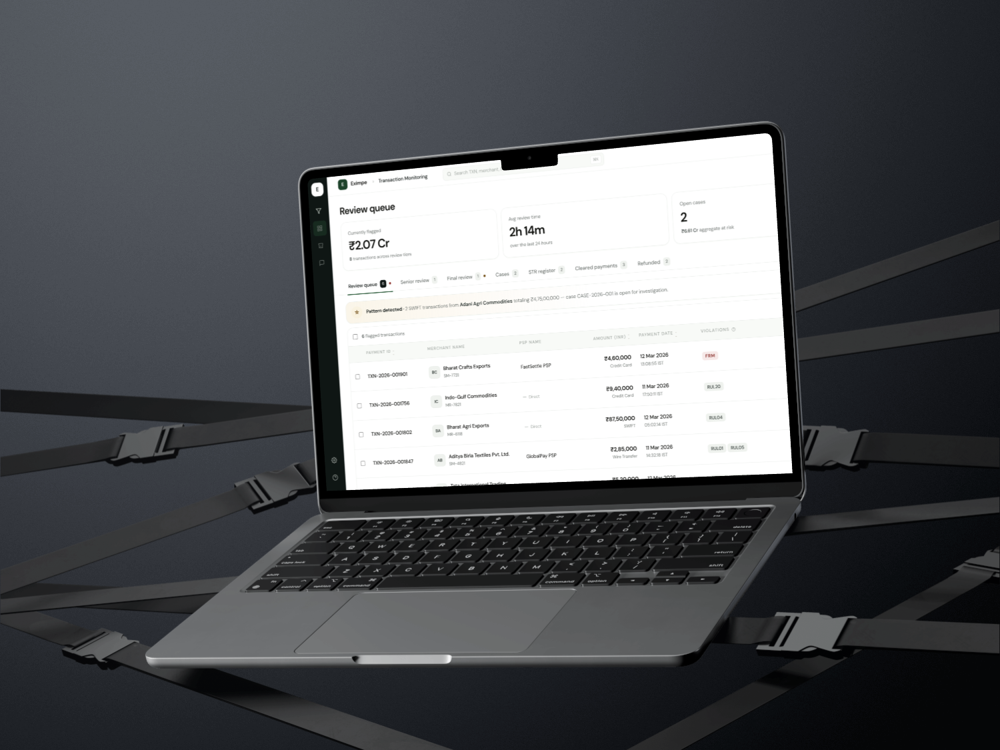
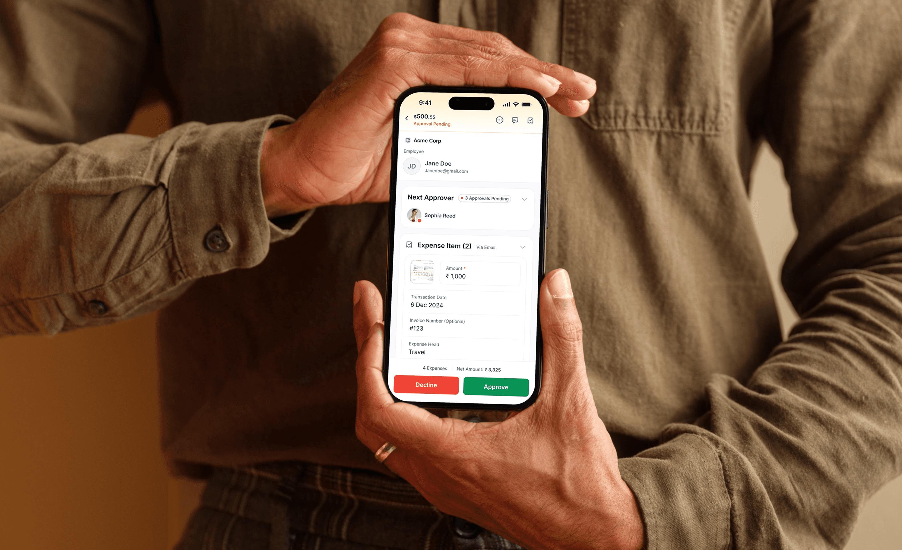
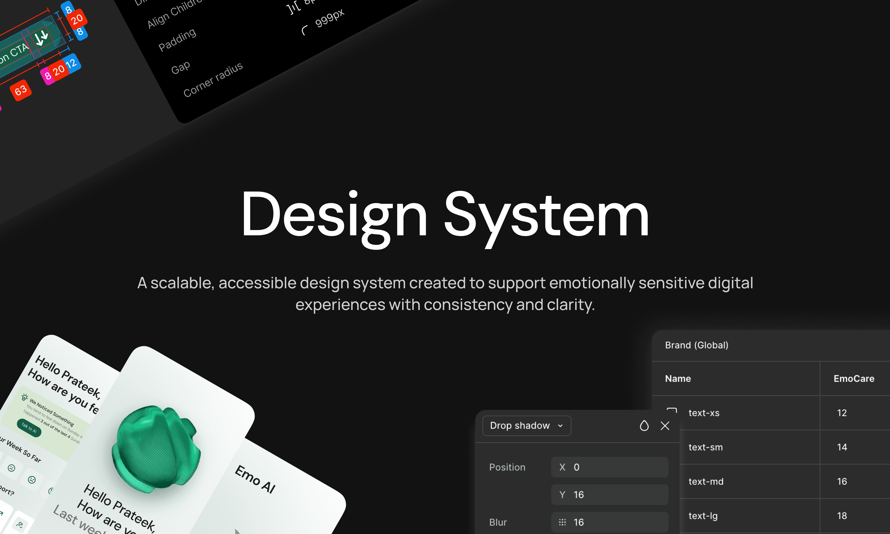
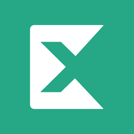

₹50Cr+ in payments, finally visible.
A unified overview for finance teams that retired the side-spreadsheet.
~70% daily adoption · ₹50Cr+ visible
Read case study ↗︎Four years of refusing to design until the problem is clear. I work at the intersection of product thinking and interaction craft — which is a fancy way of saying I care about the words too.
A unified overview for finance teams that retired the side-spreadsheet.
~70% daily adoption · ₹50Cr+ visible
Read case study ↗︎
An RBI approval unlocked replacing the external compliance partner. I designed the in-house TMS, prototyped in working code with AI, and shipped to engineering.
~6 min median review · 100% commission cut
Read case study ↗︎
A multi-claim mobile flow that turned a one-at-a-time form into a real Sunday-evening session.
~50% faster bulk claim submissions
Read case study ↗︎
A personal exploration of an emotional-support app — tokens, components, foundations-up.
9 foundations · accessibility-first
Read case study ↗︎I started in design making landing pages for friends and slowly realising the landing page wasn't the problem. Four years in, I'm still figuring out the same thing — just at higher resolution, and on bigger surfaces.
I work best on messy, end-to-end product surfaces where the question isn't "what should this button look like" but "should this button exist at all." Fintech, internal tools, anything with a workflow that someone has been quietly tolerating for too long.
AI is part of the loop, not a label. I prototype closer to the real product instead of static screens — so flows get tested earlier and edge cases stop being surprises in QA.

B2B cross-border payments.
B2B fintech — accounts payable for finance teams.
Design agency — variety, velocity, real shipping.
Four moments where AI tightens the loop — from messy brief to clean handoff.
Messy threads → working brief. Ambiguity gets named before Figma opens.
Static mock → real interactions in the same afternoon. Reviewers click, engineers see intent.
Failure modes designed first. Mismatches, duplicates, drift — handled before QA finds them.
Tokens, states, motion handed off as values — not pixels they have to measure.
Prateek and I worked together at Pazy, where he was a product designer on the team. He owned his work end-to-end — from understanding the problem to shipping the solution — and he's good at simplifying complex flows, thinking through edge cases, and keeping the experience working for actual users. Easy to collaborate with, always open to feedback, and someone you can count on to deliver high-quality work.
Working alongside Prateek at Pazy, what struck me was how naturally he questioned the brief. He'd ask why a flow existed before redrawing it — and that habit kept us from designing prettier versions of the wrong thing. Generous with feedback, decisive when it mattered, and consistent on delivery. The kind of teammate who pushes the work without making it about himself.
I worked with Prateek at Mongoosh, where he was juggling four client projects across very different industries. The thing that stood out — even early in his career — was how seriously he took the fundamentals. Hierarchy, alignment, copy, edge cases. Nothing got hand-waved. He'd switch from a fintech dashboard to a beauty brand site without losing the rigor either of them deserved.
Building the transaction monitoring system with Prateek was the cleanest design handoff I've had. Every state, every edge case, every empty / loading / error variation — already thought through before the file got to me. We argued about a couple of interaction details and he came back with three options, not one defended position. That made the work go faster, not slower.
Most designers ship the brief. Prateek pushes back on it first. On the TMS he reframed the actual problem we were solving — and the version we shipped was significantly better than what I'd asked for. He thinks like a product person who happens to draw, which is the rarer kind of teammate to find.